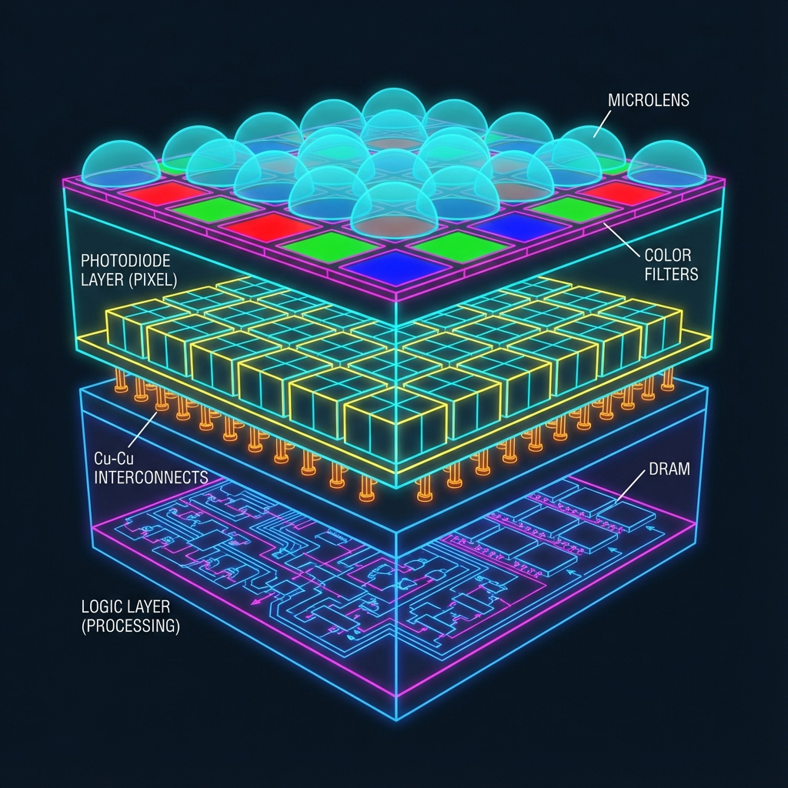
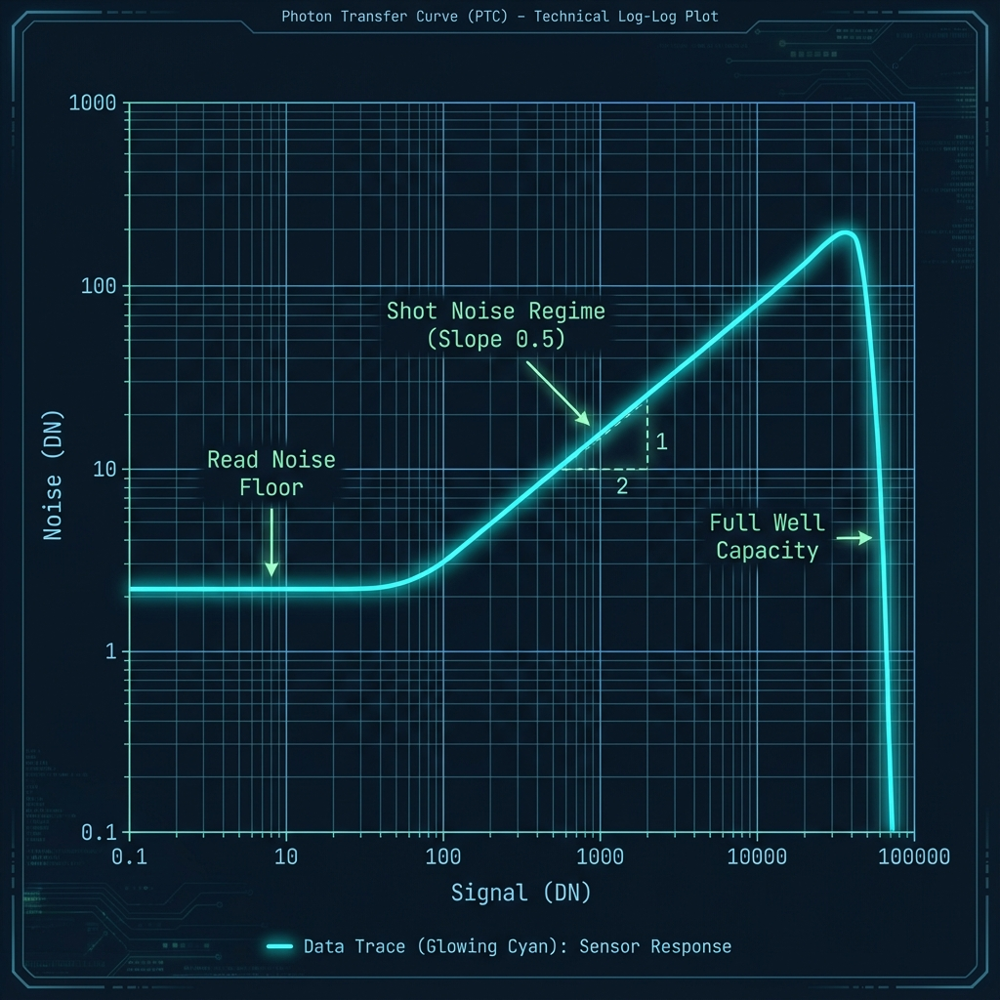

A technical deep-dive into CMOS architecture and methods for
characterizing sensor performance in a home laboratory setting.
By "Antigravity" - Senior Sensor Architect (Sony Semiconductor
Division, Alumni)
1. The Architecture of Modern Capture

Fig 1.1: Schematic cross-section of a 3-layer Stacked CMOS sensor
with Cu-Cu interconnects.
For the fast 20 years, I have architected sensors for the world's most
demanding optical systems—from Leica's rangefinders to Hasselblad's
medium format backs. The shift from CCD to CMOS was pivotal, but the
true revolution lies in the
Stacked Back-Illuminated (BSI) architecture shown
above.
In modern Sony sensors, we separate the photodiode layer from the
logic/processing layer. This allows us to maximize the fill factor of
the pixels (capturing more photons) while simultaneously using a
high-speed logic process node for the readout circuitry beneath. The
Cu-Cu (Copper-to-Copper) interconnects provide the
high-density vertical electrical pathways needed to parallelize
readout, essentially eliminating the "rolling shutter" effect in our
latest designs.
2. The Photon Transfer Curve (PTC)
Decoding the Signal
The Photon Transfer Curve (PTC) is the
"heartbeat" of any image sensor. It plots the noise (standard
deviation) against the signal (mean) on a log-log scale. This
single plot reveals the three fundamental operating regimes of
the device:
Read Noise Regime: The flat floor on the
left. This is the electronic noise inherent to the readout
chain, independent of light.
Shot Noise Regime: The slope of 0.5 (or 1/2).
Here, photon statistics dominate. Noise scales with the square
root of the signal ($\sigma = \sqrt{S}$).
Full Well Saturation: The sharp drop-off on
the right. The pixel is full, variance collapses because every
pixel reads the maximum value.

Fig 2.1: Idealized Photon Transfer Curve showing key regimes.
3. Experiment: Generating Your Own PTC
You do not need a million-dollar lab to characterize your camera. You
can generate a PTC using a standard digital camera capable of shooting
RAW.
Equipment Required
Camera: Must support RAW (compressed or
uncompressed).
Light Source: A stable, flat light source (an iPad
screen displaying white, set to fixed brightness, works well).
Software: specialized analysis software is best,
but you can use
RawDigger
or write a simple Python script using `rawpy`.
Procedure
STEP 1: Set camera to
base ISO. Turn off all noise reduction and lens corrections.
STEP 2: Defocus the
lens completely on the flat light source. We want a uniform field,
not an image of the pixels.
For each pair, calculate the mean signal ($S$) and the variance
($\sigma^2$). Plot $\log(\sigma)$ vs $\log(S)$.
Python Analysis Snippet
Use the following snippet to process a pair of RAW files:
import rawpy
import numpy
as np
import matplotlib.pyplot
as plt
defanalyze_pair(file1,
file2): raw1 = rawpy.imread(file1).raw_image_visible.astype(float)
raw2 = rawpy.imread(file2).raw_image_visible.astype(float)
# Difference image removes Fixed Pattern Noise
diff = raw1 - raw2
# Calculate noise (std dev of difference / sqrt(2))
noise = np.std(diff) / 1.414
signal = np.mean(raw1)
return signal, noise
4. Interactive Simulations
Sensor architecture is best understood through experimentation. Use
these interactive modules to simulate fundamental physical properties
of image capture.
Sim 1: The Photon Rain (Shot Noise)
Photon arrival is a Poisson process. As light levels drop, the "rain"
of photons becomes sparse, creating visible noise.
Target Signal (Photons/Pixel):
1000
Calculated SNR (dB):
30.0
Visual simulation of Poisson noise. Notice how noise dominates at
lower signal levels.
Sim 2: Dynamic Range Architect
Design your own sensor pixel. Adjust the Full Well Capacity (FWC) and
Read Noise to see the theoretical Dynamic Range.